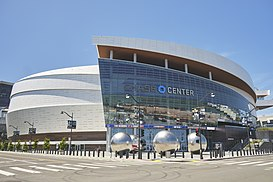
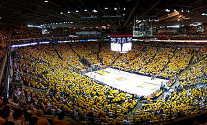
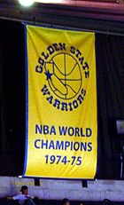

Los Golden State Warriors (en español: Guerreros del Estado Dorado) son un equipo profesional de baloncesto de los Estados Unidos con sede en San Francisco, California. Compiten en la División Pacífico de la Conferencia Oeste de la National Basketball Association (NBA) y disputan sus partidos como locales en el Chase Center, ubicado en el barrio sanfranciscano de Mission Bay.
La franquicia fue fundada en Filadelfia en 1946 con el nombre de Philadelphia Warriors. A principios de la década de 1960 el equipo se mudó al área de la Bahía de San Francisco, donde adoptó el nombre con el que se le conoce en la actualidad. Golden State (Estado Dorado) es el sobrenombre con el que se conoce a California por sus doradas colinas y por la Fiebre del Oro de 1849.
A lo largo de su historia, los Warriors han ganado un total de seis campeonatos de la NBA (el tercer equipo más laureado de la liga empatado con los Chicago Bulls y únicamente por detrás de los Boston Celtics y Los Angeles Lakers), once títulos de Conferencia y siete títulos divisionales. Además, poseen el mejor registro de todos los tiempos en una temporada regular (73-9 en la 2015-16) y en unos Playoffs (16-1 en 2017).
De acuerdo con la revista Forbes, los Golden State Warriors son el sexto club deportivo más valioso del mundo y el segundo de la NBA con un valor estimado de 4700 millones de dólares.
| Chase Center es un pabellón deportivo en la zona de Mission Bay de la ciudad de San Francisco. alberga partidos de baloncesto como nuevo recinto local para la franquicia Golden State Warriors perteneciente a la National Basketball Association (NBA). Los Warriors, que han estado asentados en el área de la bahía desde 1962 jugaron inicialmente en San Francisco, mudándose a su localización anterior, donde jugaban en el Oracle Arena de Oakland desde 1971 hasta 2019, cuando el equipo de retornó a la otra orilla de la bahía. |  |
| El momento verdaderamente memorable llegaría en los playoffs de esa temporada. Liderados por el base-escolta Davis, el tirador Monta Ellis, Jason Richardson y el pívot Biedriņš, los Warriors vencieron a los Dallas Mavericks de Dirk Nowitzki por 4-2, era la primera vez en la historia que un octavo clasificado vencía al primero en una serie a siete partidos. El lema "We Believe" comenzó a hacerse sentir, pero los Warriors fueron vencidos por Utah Jazz en las Semifinales de Conferencia por 4-1, con una gran victoria en el Oracle Arena por parte de los Warriors. |  |
| Los Warriors ganaron su primer campeonato en la Costa Oeste en la campaña 1974-75. En lo que muchos consideran la mayor sorpresa en la historia de la NBA, los Warriors derrotaron a Washington Bullets en las Finales de la NBA, barriéndoles en cuatro partidos. Aquel equipo estaba entrenado por Al Attles, y liderado en cancha por Rick Barry, Jamaal Wilkes y Phil Smith. Se confiaba tan poco en que el equipo llegara lejos en playoffs que se programó otros eventos en el Coliseum Arena para esas fechas. Por consiguiente, los Warriors jugaron sus partidos en casa en postemporada en el Cow Palace en Daly City. |  |